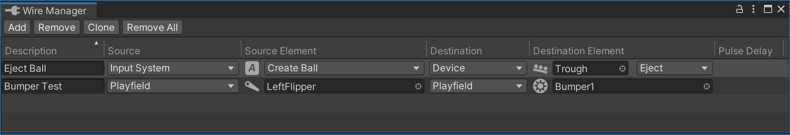

Wire Manager
Using the Switch Manager, you can wire playfield and cabinet switches to the Gamelogic Engine. Similarly, the Coil Manager and Lamp Manager let you connect playfield elements to the outputs of the Gamelogic Engine.
The Wire Manager allows you to bypass the gamelogic engine and connect switches directly to coils and lamps. Using the dynamic wires, this can be used to eliminate the flipper lag often introduced by emulated ROMs. But it also can be useful for debugging, or for game logic that might not be covered by the gamelogic engine.
You can open the wire manager under Pinball -> Wire Manager.

Setup
Every row in the wire manager's table corresponds to a connection between a switch and an element that takes an input. You can connect multiple switches to one element or a single switch to multiple elements. In the following, we call the switch the source and the element it is connected to the destination.
Description
The first column Description is optional. It can help better organize all the connections, but can be left empty if you want.
Source
The Source column defines the type of source you are connecting to. There are four types:
- Playfield lets you select any game item that qualifies as a source from the playfield.
- Input System lets you select an input action from a pre-defined list, e.g. cabinet switches.
- Constant sets the destination to a constant value.
- Device lets you select a source device. Such devices are mechanisms that include multiple sources, for example troughs.
Source Element
The Source Element column is where you select which element acts as the source.
For Playfield sources, you can select a game item that triggers switch events. Currently, VPE emits switch events for items that would do so in real life, i.e. bumpers, flippers, gates, targets, kickers, spinners and triggers.
If Input System is selected, you select which input action to use. Actions may have default key bindings, but the final bindings to a key or other input will be defined in the host application (the VPE player).
If the source is a Device, then there are two values to select. The actual source device, and which switch of that device should be connected to the gamelogic engine.
Finally, if Constant is selected, you select the value that will be permanently set at the beginning of the game. This might me useful for lamps that are always on.
Destination
Under Destination you can select the type of the element that will receive the switch changes. There are two types to choose from:
- Playfield lets you select any game item that qualifies as a destination from the playfield
- Device lets you choose a destination device. Such devices are mechanisms that include multiple coils or lamps, for example troughs.
Destination Element
The Destination Element column is where you select which specific element in the destination column should receive switch changes. If Device was selected in the previous column, both the actual device and the element within the device have to be selected.
Dynamic
By checking the Dynamic box, the wire dynamically enables and disables depending on the gamelogic engine's output. Used with flippers, this feature is also known as Fast Flip and can be used to reduce the lag introduced by an emulated gamelogic engine like PinMAME.
If it's enabled and a game is started, VPE compares the switches and coils linked to the gamelogic engine and tries to find the switch and coil IDs that correspond to the wire. If found, VPE monitors the coil signals of the gamelogic engine. If the time between the switch and the coil response is below a threshold, the wire is enabled and future coil signals from the gamelogic engine are discarded. In the same way, if the wire is active and no coil signal is received within the threshold, the wire is disabled again.
Note
In order to match the switch and coil signals from the gamelogic engine, the switch and the coil need to be linked to the gamelogic engine using the Switch Manager and Coil Manager respectively. For example, it's not sufficient to just create a flipper button -> flipper coil wire and not link the flipper button to the flipper switch and the flipper coil to the flipper.
There are a few edge cases that are handled as well. For example, if the wire is active and the gamelogic engine enables the coil without a switch signal (like the Phantom Flip in Monster Bash), the coil event is not discarded (VPE internally keeps a queue of switch events and if the queue is empty, coil events are still processed).
However, by design, there are two caveats:
- When the wire is inactive, the first event always has the gamelogic engine lag, since VPE will only activate the wire when it's sure a coil event is emitted.
- When the gamelogic engine stops emitting coil events, VPE continues emitting the coil event one more time until it discovers the absence of the coil event and thus sends the negative signal after the threshold to "undo" its mistake.
Note
MPF has a similar feature called Hardware Rules. This is the preferred way, because the gamelogic engine explicitly notifies VPE about which wires to add and remove during gameplay.
However, other gamelogic engines like PinMAME don't have this feature, that's why VPE comes with the dynamic wire feature that guesses when wire is active and when not.
Pulse Delay
Internally, VPE connects switches to events. Some switchable game items only emit the switch closed event. Such items are spinners and targets. These are elements where the re-opening of the switch does not have any semantic value.
In order for those to not stay closed forever, VPE closes them after a given delay. We call this the Pulse Delay. This field is only visible if the input source is a pulse-driven source.
Runtime
During runtime, you'll see the wire statuses update in real-time. Clicking on the icon manually toggles the wire, which can be handy for debugging.